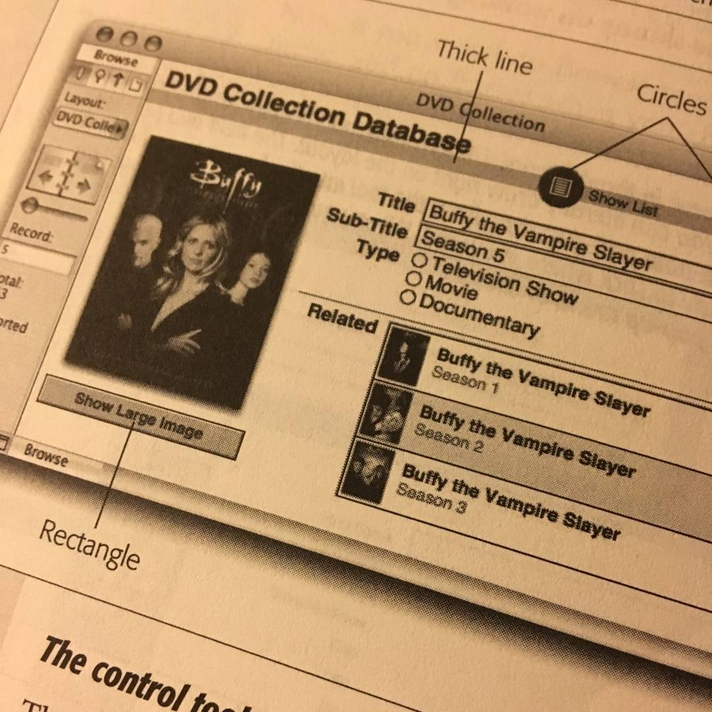
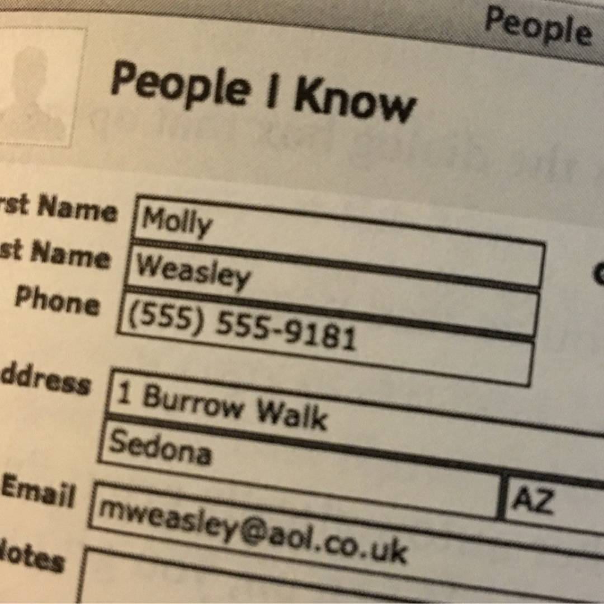
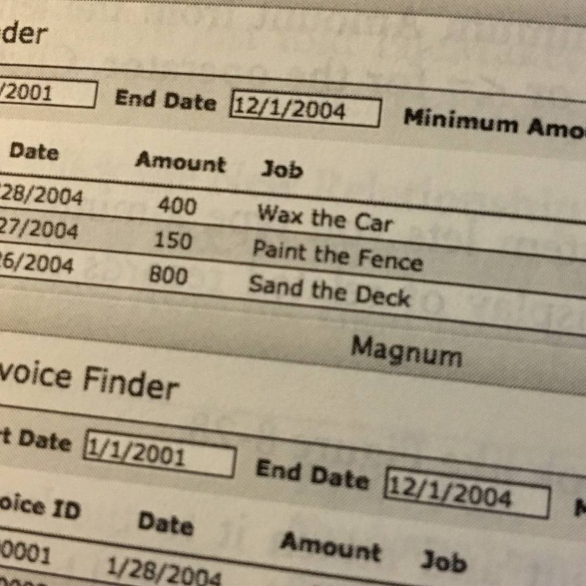
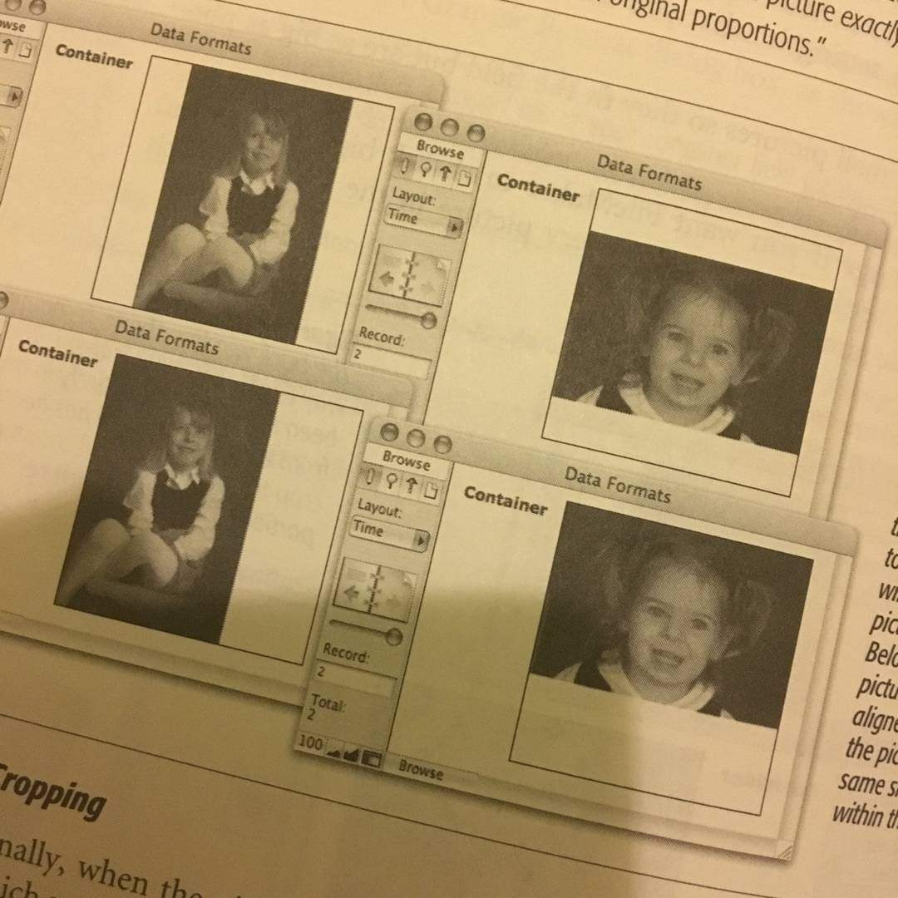
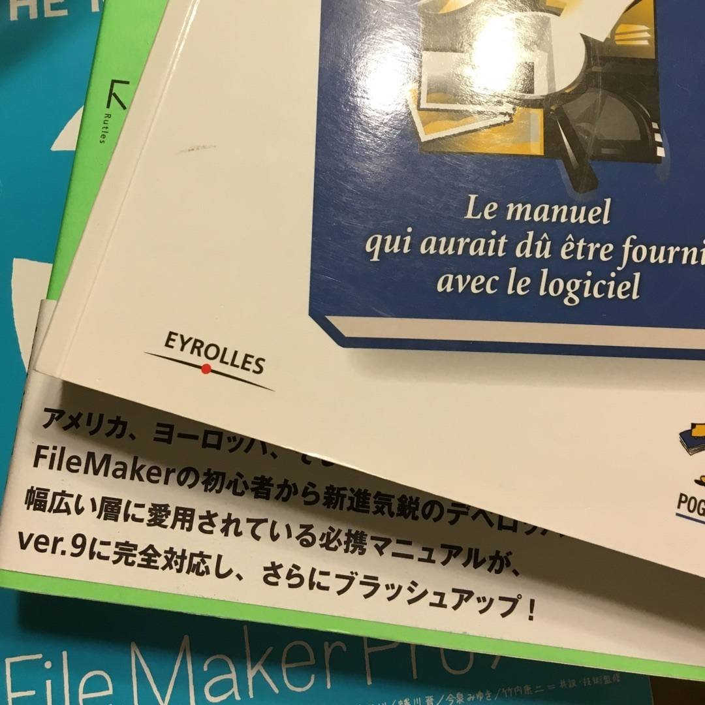
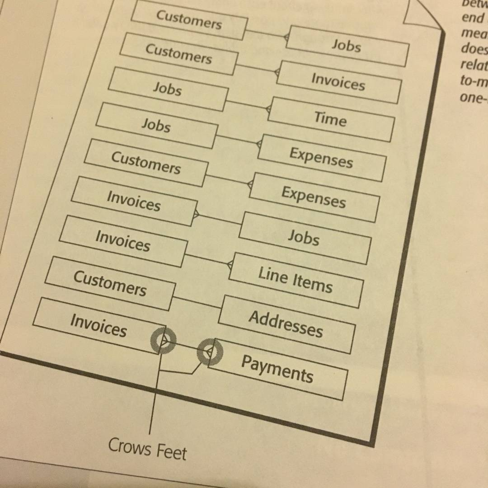

TIME TO BRAG ABOUT MY BOOK
@Lisa_Fav requested this just so we’re clear.
-
I wrote a book about FileMaker Pro. Some day I'll list about that process which was somewhat harrowing.
-
I actually wrote five editions of the book. But all but the first were various degrees of revision.
-
Here are all the great things about this work of high brow literature.
-

It is chock full of Buffy the Vampire Slayer references.
-

And some Harry Potter references.
These were a little more obscure when I wrote it in 2003.
-
And one secret Les Miserables reference.
-

And a few others.
-

It has pictures of my kids in some of the figures. For example on page 246 of the FileMaker 8 edition.
-
It is 800 pages all written in Microsoft Word for Mac. It crashed a lot while I was writing it. I developed a deep-seated hatred for Word during those years.
-
My original editor was David Pogue, formerly the tech editor for the New York Times, now with Yahoo. He was absolutely amazing to work with. No exaggeration. Smart, fast, responsive, supportive, and super insightful about writing clearly about technology.
-
It is full of pretty dumb jokes because I like dumb jokes.
-
I just threw away three boxes full of old copies when I cleaned my garage. I kept one of each edition.
-

It was translated to French and Japanese.
-
There was talk of a German translation but it never came together.
-
It is 800 pages and I had to read it cover to cover twice after writing it. And of course I read each and every sentence many times while writing. That last full read through was one of the most boring reads of my life.
-
It has my email address in it. For years I got emails from readers, but they eventually dwindled. I always tried to answer their questions comprehensively, which was usually fun.
-
But once a guy emailed me. I replied that I was busy but I'd give it some attention over the weekend. He replied that he needed an answer sooner than that. I ignored this. He emailed two more times that day demanding a faster reply. That was the only reader question I never answered. Jerk.
-

I made all the illustrations by hand in Adobe Illustrator which I had never used before.
-
It has no dedication. The publisher never asked me for one and I was too shy to ask about it.
-
The first chapter is close to but not exactly the same as the writing sample I sent O'Reilly when I pitched the book.
-
When it was first released I went to Borders (remember them?) to look at it on the shelf. I bought a copy. Even though I had a box full they sent me for free. What a dork.
-
I have seen it in the wild a few times. When I moved into this house ten years ago my neighbor turned out to be a reader and she was very excited. @sophster's friend's dad also read it before I met him. And a friend of mine saw it being used to elevate a monitor on someone's desk and sent me a picture.
(And of course I saw a lot of them floating around at conferences and things...)
-
It was super duper staggeringly anxiety-inducingly embarrassing when people asked me to sign it.
-
I still get pro-rated royalties because technically some tiny percentage of my work is still in the more recent editions (the ones I didn't author). My typical royalty check is like $12 a quarter now. Every time I get one I make a dumb joke like "Kids! Dinner's on me! We're going to McDonalds. We're sharing."
-
That is all you ever wanted to know (and more!) about my book.